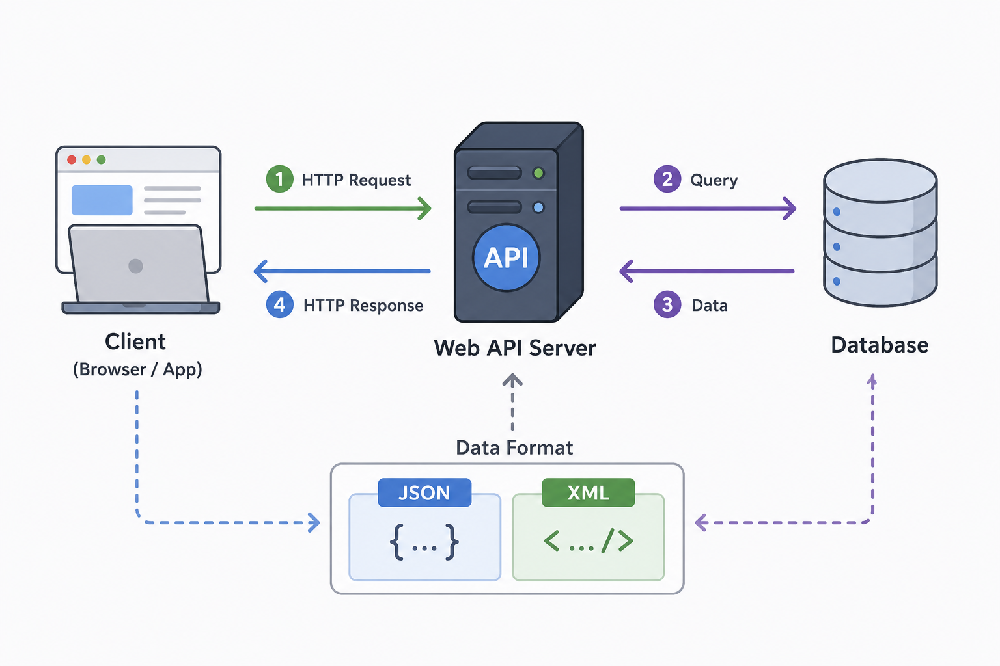
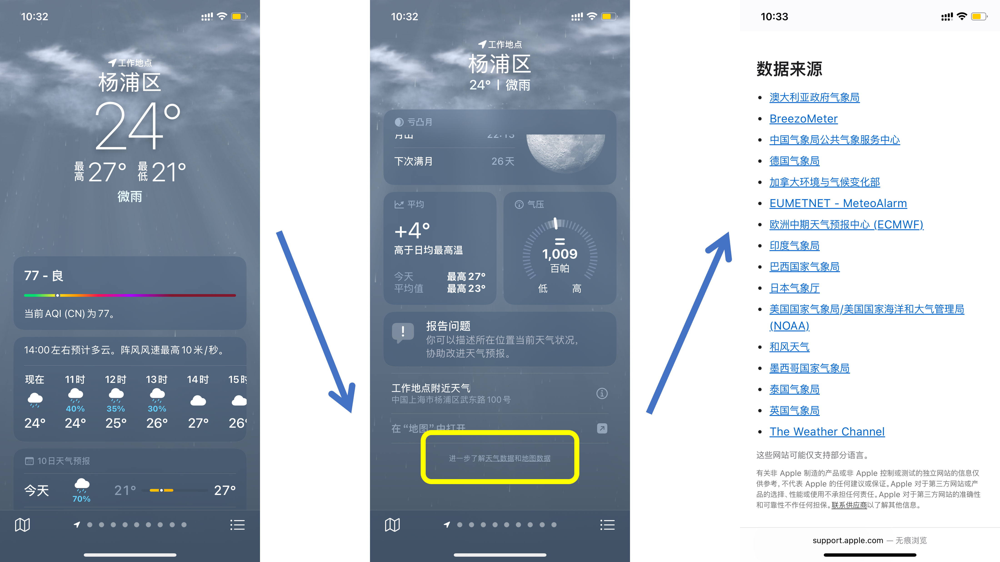
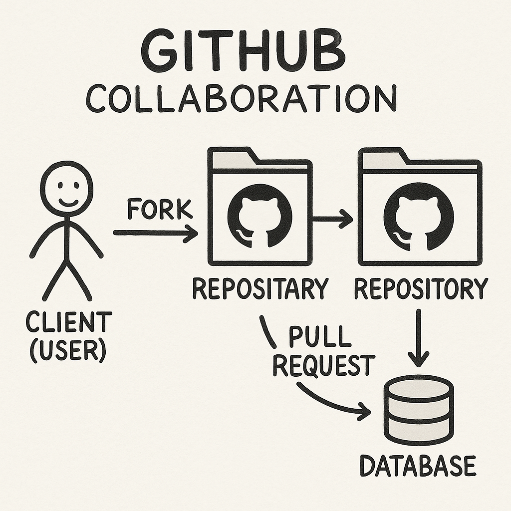
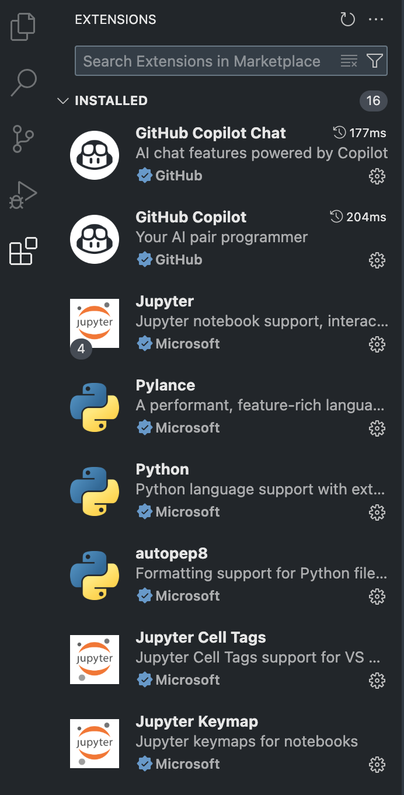

Python Programming
Lecture 13 Web API
13.1 Web Api

Weather Data

中国气象台大数据接口
import requests
url = "http://t.weather.itboy.net/api/weather/city/101020100"
r = requests.get(url)
print(r.status_code)
response_dict = r.json()
f = response_dict['data']
ff = f['forecast']
ff_today = ff[0]
ff_1 = ff[1]
ff_2 = ff[2]
def show(day):
for x in day:
print(x+': '+str(day[x]))
print()
show(ff_today)
show(ff_1)
show(ff_2)
Deepseek API开放平台
API说明文档
# Please install OpenAI SDK first: `pip3 install openai`
from openai import OpenAI
client = OpenAI(api_key="your api_key", base_url="https://api.deepseek.com")
response = client.chat.completions.create(
model="deepseek-chat",
messages=[
{"role": "system", "content": "You are a helpful assistant"},
{"role": "user", "content": "鲁迅暴打周树人"},
],
stream=False
)
print(response.choices[0].message.content)
Where to find Web Api? Public APIs, 聚合数据, IMDB-API
TMDB-API, OMDB-API
import requests
api_access = 'Your API Key'
page = 1
url = f"https://api.tmdb.org/3/movie/\
top_rated?language=en-US&page={page}"
headers = {
"accept": "application/json",
"Authorization": f"Bearer {api_access}"
}
response = requests.get(url, headers=headers)
response_dict = response.json()
# print(response_dict)
movies=response_dict["results"]
print(len(movies))
for key, value in movies[0].items():
print(f"{key}: {value}")
adult: False
backdrop_path: /zfbjgQE1uSd9wiPTX4VzsLi0rGG.jpg
genre_ids: [18, 80]
id: 278
original_language: en
original_title: The Shawshank Redemption
overview: Imprisoned in the 1940s for the double murder of his wife and her lover,
upstanding banker Andy Dufresne begins a new life at the Shawshank prison,
where he puts his accounting skills to work for an amoral warden.
During his long stretch in prison, Dufresne comes to be admired by the other
inmates -- including an older prisoner named Red --
for his integrity and unquenchable sense of hope.
popularity: 115.576
poster_path: /9cqNxx0GxF0bflZmeSMuL5tnGzr.jpg
release_date: 1994-09-23
title: The Shawshank Redemption
video: False
vote_average: 8.705
vote_count: 26204
Downloading Images
from pathlib import Path
poster = movies[0]['poster_path']
title = movies[0]['title']
img_url = f"https://image.tmdb.org/t/p/w500{poster}"
r = requests.get(img_url, headers=headers)
if r.status_code == 200:
save_path = Path(f"{title}.jpg")
save_path.write_bytes(r.content)
else:
print("download failed")
Top10
import requests
from pathlib import Path
api_access = 'Your API Key'
page = 1
url = f"https://api.tmdb.org/3/movie/\
top_rated?language=en-US&page={page}"
headers = {
"accept": "application/json",
"Authorization": f"Bearer {api_access}"
}
response = requests.get(url, headers=headers)
response_dict = response.json()
movies=response_dict["results"]
top10 = movies[:10]
for movie in top10:
poster = movie['poster_path']
title = movie['title']
img_url = f"https://image.tmdb.org/t/p/w500{poster}"
r = requests.get(img_url, headers=headers)
if r.status_code == 200:
save_path = Path(f"{title}.jpg")
save_path.write_bytes(r.content)
else:
print("download failed")
Now Playing
import requests
from pathlib import Path
api_access = 'Your API Key'
page = 1
url = f"https://api.tmdb.org/3/movie/\
now_playing?language=en-US&page={page}"
headers = {
"accept": "application/json",
"Authorization": f"Bearer {api_access}"
}
response = requests.get(url, headers=headers)
response_dict = response.json()
movies=response_dict["results"]
top10 = movies[:10]
for movie in top10:
poster = movie['poster_path']
title = movie['title']
img_url = f"https://image.tmdb.org/t/p/w500{poster}"
r = requests.get(img_url, headers=headers)
if r.status_code == 200:
save_path = Path(f"{title}.jpg")
save_path.write_bytes(r.content)
else:
print("download failed")
量化投资
Tushare, JoinQuant, AKshare
import akshare as ak
stock_zh_a_hist_df = ak.stock_zh_a_hist(symbol="600519", period="daily",\
start_date="20170301", end_date='20240528', adjust="")
print(stock_zh_a_hist_df)
- symbol为股票代码，adjust为是否复权
- 生成的格式为pandas包中的DataFrame格式
- “贵州茅台”收盘价绘图（2017-2024）
import matplotlib.pyplot as plt
from datetime import datetime
fig, ax = plt.subplots()
ax.plot(stock_zh_a_hist_df["日期"],stock_zh_a_hist_df["收盘"], linewidth=0.5)
ax.scatter(stock_zh_a_hist_df["日期"],stock_zh_a_hist_df["收盘"], s=5)
fig.autofmt_xdate()
plt.savefig('maotai.jpg',dpi=300)

13.2 Github & AI辅助编程

Github教程

GitHub 是一个基于 Git 版本控制系统 的 代码托管平台，由 GitHub 公司（现为 Microsoft 子公司）于 2008 年推出。它是全球最受欢迎的开源协作平台，广泛应用于软件开发、版本管理、团队协作和项目发布。GitHub官网地址：https://github.com
- 👩💻适用人群
- 开发者：托管代码、开源项目、构建团队协作流程
- 学生：学习编程、参与开源项目、积累实践经验
- 教师：共享教学代码、布置项目作业
- 企业/组织：进行私有项目开发、部署自动化流程
Github的API接口（关于Python的项目）
https://api.github.com/search/repositories?q=language:python&sort=stars
import requests
url = 'https://api.github.com/search/\
repositories?q=language:python&sort=stars'
r = requests.get(url)
print("Status code:", r.status_code)
response_dict = r.json()
for keys in response_dict.keys():
print(keys)
Status code: 200
total_count
incomplete_results
items
- Working with the Response Dictionary
print("Total repositories:", response_dict['total_count'])
repo_dicts = response_dict['items']
print("Repositories returned:", len(repo_dicts))
repo_dict = repo_dicts[0]
print("\nKeys:", len(repo_dict))
Total repositories: 20566130
Repositories returned: 30
Keys: 80
print("\nSelected information about first repository:")
print('Name:', repo_dict['name'])
print('Owner:', repo_dict['owner']['login'])
print('Stars:', repo_dict['stargazers_count'])
print('Repository:', repo_dict['html_url'])
print('Created:', repo_dict['created_at'])
print('Updated:', repo_dict['updated_at'])
print('Description:', repo_dict['description'])
Selected information about first repository:
Name: public-apis
Owner: public-apis
Stars: 339656
Repository: https://github.com/public-apis/public-apis
Created: 2016-03-20T23:49:42Z
Updated: 2025-05-16T06:51:23Z
Description: A collective list of free APIs
- Visualizing Repositories Using Plotly
import requests
import plotly.express as px
URL = 'https://api.github.com/search/repositories?q=language:python&sort=star'
r = requests.get(URL)
print("Status code:", r.status_code)
response_dict = r.json()
repo_dicts = response_dict['items']
names, stars = [], []
for repo_dict in repo_dicts:
names.append(repo_dict['name'])
stars.append(repo_dict['stargazers_count'])
title = "Most-Starred Python Projects on GitHub"
labels = {'x': 'Repository', 'y': 'Stars'}
fig = px.bar(x = names, y=stars, title = title, labels=labels)
fig.write_html('python_repos.html')

GitHub Copilot官网
尽管 ChatGPT或者Deepseek 可以编写完整的代码，但是要与集成开发环境（Integrated DevelopmentEnvironment,IDE）无缝对按，使用ChatGPT 就不太方便了，尤其是在生成片段代码时，如补全一个函数的定义、补全某个语句等，在这种情况下，使用GitHub Copilot 是一个非常好的选择。当然，最好是将 ChatGPT 与 GitHub Copilot一起使用：使用 ChatGPT 生成一个完整的解决方案，并使用 GitHub Copilot 对这个解决方案进行微调。
1. 安装VScode参考配置 参考配置（VScode是什么？常用IDE有哪些？）
2. 注册GitHub账户；3. 在VScode里面安装GitHub Copilot插件

功能介绍
1. 自动补全注释（按Tab键）
# 编写一个程序，读取文件夹中的文件
2. 根据函数名自动生成代码（按Tab键）
def bubblesort()
3. 生成测试用例（在bubblesort函数下方输入）
#测试bubblesort函数
4. 逐步代码生成
#定义5个列表变量，每个列表包含2到10个元素
#将5个列表合并，再调用bubblesort函数对列表排序
5. 自动生成语句架构
for i
-if
6. 生成多个候选解决方案
如果使用Tab键生成解决方案，那么对于一些复杂的代码，可能需要一行一行地生成（需 要不断地按Enter 键和Tab 键），比较麻烦。GitHub Copilot 提供了生成多个候选解决方案的功能，具体的做法就是在注释中按 Ctrl + Enter 组合键，这将显示一个新的选项卡，默认会自动生成10个解决方案。(有时候还不如直接ChatGPT或者Deepseek)
#用Flask实现一个服务端程序，只支持GET请求，请求的参数是一个字符串，返回一个字符串。
7. 检查代码漏洞
# 检查上面的代码是否有漏洞
一句话就是：写注释，然后enter和tab来回的按。
GitHub Copilot的免费平替CodeGeeX
13.3 Encoding（计算机编码）

Encoding
from pathlib import Path
path = Path('alice.txt')
contents = path.read_text(encoding='utf-8')
Character Encoding: ASCII, Unicode, UTF-8, GBK

- Unicode把所有语言都统一到一套编码里。Unicode标准也在不断发展，但最常用的是用两个字节表示一个字符（如果要用到非常偏僻的字符，就需要4个字节）。现代操作系统和大多数编程语言都直接支持Unicode。
- UTF-8编码把一个Unicode字符根据不同的数字大小编码成1-6个字节，常用的英文字母被编码成1个字节，汉字通常是3个字节，只有很生僻的字符才会被编码成4-6个字节。
- 在计算机内存中，统一使用Unicode编码，当需要保存到硬盘或者需要传输的时候，就转换为UTF-8编码。
chinese = '你好'.encode('utf-8')
print(chinese) # 输出：b'\xe4\xbd\xa0\xe5\xa5\xbd'
#这是字节串（是bytes，不是字符串！）用16进制是为了方便阅读，\x是16进制的前缀
print(len(chinese)) # 输出 6（每个汉字占 3 字节）
b'\xe4\xbd\xa0\xe5\xa5\xbd'.decode('utf-8') # 输出：你好
- Two-dimensional code, QR code
import qrcode
img=qrcode.make("Hello!")
img.save("x.png")
import qrcode
img=qrcode.make("https://wangwanglulu.com/")
img.save("wl.png")

教材中我们跳过的章节：
-
Python Crash Couse (Chapter 12 - 14, 18 - 20)
-
Chapter 11: Testing Your Code（测试代码）
-
Chapter 12 -14: Alien Invasion（外星人入侵）
-
Chapter 18 - 20: Django（Web应用：创建网站）
-
-
Python for Everybody (Chapter 11 - 13, 15 - 16)
-
Chapter 11: Regular Expressions（正则表达式）
-
Chapter 12: Networked Programs 12.4 - 12.8 (urlib, BeautifulSoup)（分析网页）
-
Chapter 13: Using Web Services (XML, JSON, API)（还是web api）
-
Chapter 15: Databases and SQL（数据库）
-
Chapter 16: Visualizing data (Network, Word Cloud)（可视化：网络图，词云）
-
What's next?


Summary
- Web Api
- Reading: Python Crash Course, Chapter 17